Section: Foundry Shop · Code FS 301
Foundry Practice: Green Sand Moulds from Solid and Split Patterns
A sand mould has to satisfy two demands that pull against each other: it must be rammed hard enough to hold its shape under the pressure of several kilogrammes of liquid metal, and open enough to let the steam and gas generated at the instant of pouring escape. Nearly every defect in a casting is a failure of that balance, and nearly every rule in the moulding shop is an attempt to hold it.
1 Aims
The aim of this practical is to prepare complete green sand moulds ready for pouring, first from a one-piece solid pattern and then from a two-piece split pattern, and through that work to learn the constituents and properties of moulding sand, the types and allowances of patterns, the hand tools of the moulding shop, and the design of the gating and venting system.
A further aim is to understand why sand casting remains the dominant casting process despite the roughness of its surface finish and the looseness of its tolerances. It will produce a casting of almost any size, from a few grammes to many tonnes, in almost any metal, with internal cavities of arbitrary complexity, from tooling that costs a fraction of the price of a die. For the production engineer, knowing the shapes that cannot be moulded is as important as knowing the process itself, because it is at the design stage that a component becomes either cheap or impossible to cast.
2 Objectives
- To know the materials used in the foundry shop, in particular the constituents of moulding sand.
- To state the properties required of a good moulding sand and explain why each is necessary.
- To familiarise with the hand tools of the moulding shop and the function of each.
- To identify the types of pattern and to state the pattern allowances and why they are applied.
- To prepare a green sand mould from a solid (one-piece) pattern.
- To prepare a green sand mould from a split (two-piece) pattern.
- To cut and form a complete gating system — pouring basin, sprue, runner, ingate and riser — and to vent the mould.
3 Apparatus
Materials: green moulding sand, facing sand, parting sand or parting powder, patterns (one solid, one split), water.
- Moulding box (flask): cope and dragThe two-part frame that contains and supports the sand; the drag is the bottom half and the cope the top, located by pins and lugs.
- Moulding board and turnover boardFlat boards on which the drag is rammed and on which the mould is turned over.
- ShovelMixing the sand heap and filling the boxes.
- Hand riddle (sieve)Sieving facing sand over the pattern to remove lumps and foreign matter.
- Rammers (peen, butt, floor, pneumatic)Packing the sand; the peen end for corners and around the pattern, the flat butt for the bulk.
- Strike-off bar (strickle)Straight-edged bar drawn across the box to remove surplus sand level with the top edge.
- Vent wire1–2 mm diameter wire pushed through the cope to create gas escape passages.
- Draw spike (rapping bar / draw screw)Threaded or pointed rod screwed or driven into the pattern to withdraw it from the sand.
- MalletRapping the draw spike to loosen the pattern before drawing.
- Trowels (finishing, heart, square)Repairing and smoothing the mould surface and the joint face.
- Slick (and spoon, lifter)Small double-ended tools for finishing and repairing small cavities and fillets that the trowel cannot reach.
- Lifter (cleaner)Thin steel blade for removing loose sand from deep, narrow pockets in the mould.
- SwabSoft brush or sponge for moistening the sand around the pattern before drawing.
- Sprue pin and riser pinTapered wooden pins forming the vertical passages for pouring and feeding.
- Gate cutterThin U-shaped sheet metal tool for cutting the runner and ingate channels in the joint face.
- BellowsBlowing loose sand out of the finished cavity without damaging it.
- Crucible, tongs and furnaceMelting and pouring the metal (pouring demonstrated by the technologist).
4 Theory and Diagrams
4.1 Casting and the foundry
Casting is the process of producing a component by pouring molten metal into a prepared cavity of the required shape and allowing it to solidify. It is the oldest of the metal-forming processes and it remains the most direct, because it produces a shape in one operation from liquid metal without any intermediate stock form. Sand casting is the most widely used variant, in which the cavity is formed in a bonded sand aggregate around a reusable pattern, and the mould is destroyed to recover the casting.
Its advantages are considerable: it is applicable to virtually any metal that can be melted; there is effectively no upper limit on size; internal cavities of great complexity can be produced by the use of cores; and the tooling — a wooden pattern — is cheap and quick to make, which makes the process economical from a single piece upward. Its limitations follow from the same features: the surface finish is rough, dimensional tolerances are wide, the sand and the pouring practice introduce a characteristic family of defects, and thin sections are difficult to fill.
4.2 Moulding sand
Moulding sand is not merely sand. It is an engineered aggregate of three components:
- Silica sand (SiO2), 88 to 92 per cent — the refractory skeleton that withstands the temperature of the molten metal without fusing.
- Binder (clay, usually bentonite or fireclay), 6 to 12 per cent — the material that, when wetted, gives the sand its cohesion and allows it to hold a shape.
- Moisture (water), 3 to 6 per cent — which activates the clay. Clay without water has no bonding power at all.
Small quantities of additives may be present: coal dust or sea coal, which burns at the mould face to generate a reducing atmosphere and improve the peel of the casting; cereal binders for strength; and sawdust or similar to improve collapsibility.
Types of moulding sand
- Green sand — a mixture of silica sand with 18 to 30 per cent clay and 6 to 8 per cent water, used in the damp, unbaked condition. “Green” refers to the moisture, not the colour. It is the sand used in this exercise and the most common in general foundry work, because it is cheap, reusable and requires no drying time.
- Dry sand — green sand moulds that have been baked or dried in an oven before pouring, giving greater strength and dimensional accuracy for heavier castings, at the cost of time and fuel.
- Loam sand — a high-clay mixture, 30 to 50 per cent clay with about 18 per cent water, of almost mortar-like consistency, used for very large moulds built up by hand or with a sweep.
- Facing sand — fine, freshly prepared, high-quality sand riddled directly against the pattern to a thickness of 30 to 50 mm, forming the surface of the cavity. It gives the casting its finish; the remainder of the box is filled with cheaper backing sand.
- Backing (floor) sand — reused sand from previous moulds, filling the bulk of the box behind the facing.
- Parting sand — clean, dry, binder-free silica or a proprietary parting powder, dusted on the joint face so that the cope and drag separate cleanly instead of sticking together.
- Core sand — silica with an oil binder, baked to produce cores of high strength and good collapsibility.
Properties of a good moulding sand
Six properties are required, and it is worth noting that several of them conflict, which is why sand preparation is a balance rather than an optimisation:
- Refractoriness — the ability to withstand the temperature of the molten metal without fusing, softening or sintering. Insufficient refractoriness produces a burnt-on, sand-fused surface.
- Permeability (porosity) — the ability to allow gases to pass through. At the instant of pouring, the water in the sand at the mould face flashes to steam, and air in the cavity expands; if this gas cannot escape it is forced into the metal and produces blowholes. Permeability is the property that most directly opposes strength.
- Cohesiveness (green strength) — the ability to hold together and retain the shape of the cavity when the pattern is drawn and while the metal is poured.
- Adhesiveness — the ability to cling to the sides of the moulding box, so that the rammed sand does not drop out of the cope when it is lifted.
- Collapsibility — the ability to break down readily after solidification. As the casting cools it contracts; if the sand does not yield, the casting is restrained and tears (hot tears), and it will also be difficult to knock out.
- Flowability — the ability to flow into every corner of the pattern under ramming and to transmit the ramming pressure uniformly.
Hard ramming increases green strength and gives a sharp, well-defined mould that holds its shape under the head of metal — but it closes up the spaces between the sand grains and destroys permeability, so the mould cannot breathe and the casting comes out full of blowholes. Soft ramming gives excellent permeability but a mould that crushes, washes or drops sand into the cavity. Likewise moisture: too little and the clay will not bond; too much and the excess water flashes to a large volume of steam at pouring and produces exactly the gas defects that permeability is supposed to prevent. Every one of the moulding rules — uniform ramming, the peen for corners and butt for the bulk, venting with the wire, 6 to 8 per cent water — is a way of holding this balance.
4.3 Patterns
A pattern is a replica of the casting to be produced, used to form the cavity in the sand. It is not the same shape and size as the finished casting, for reasons set out below. Patterns are usually made of wood — cheap, easily worked, and light — which is the direct link between this section and WW 301; for long production runs they are made of metal or plastic.
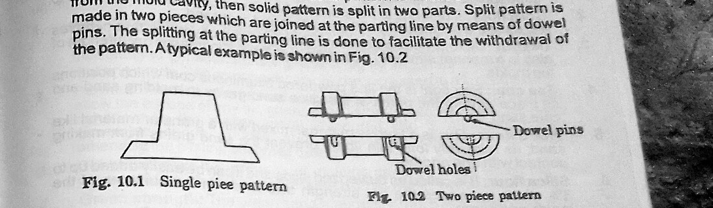
Types of pattern
- Solid (single-piece) pattern — made in one piece, the simplest and cheapest. It can only be used where the whole pattern can be withdrawn from one half of the mould, which means it must have a flat surface that can serve as the parting plane and no shape that would lock into the sand.
- Split (two-piece) pattern — divided along the parting plane into two halves located by dowel pins, one half moulded in the drag and the other in the cope. This is used where the shape cannot be withdrawn as one piece, which is the case for most symmetrical components with material above and below the widest section.
- Match plate pattern — the two halves of a split pattern permanently mounted on opposite faces of a single plate, with the gating system attached. Used for quantity production because it guarantees alignment and speeds moulding enormously.
- Cope and drag pattern — the two halves mounted on separate plates so that two moulders can work simultaneously on large castings.
- Gated pattern — several patterns connected by the runner system as one unit, for producing many small castings in one mould.
- Loose piece pattern — carries detachable projections that would otherwise prevent withdrawal; the main body is drawn first and the loose pieces removed separately through the resulting opening.
- Sweep pattern — a profile board rotated about an axis to sweep out a shape of revolution in the sand, used for very large symmetrical moulds where a full pattern would be prohibitively expensive.
- Skeleton pattern — a wooden framework filled with sand, used for very large, simple castings in small numbers.
Pattern allowances
The pattern is deliberately made to different dimensions from the finished casting. Five allowances are applied:
- Shrinkage (contraction) allowance — metal contracts as it cools from the solidification temperature to room temperature, so the pattern is made oversize by the appropriate amount. This is applied by the patternmaker using a contraction rule, a rule whose divisions are deliberately longer than standard. Typical values are about 10 mm/m for cast iron, 13 mm/m for brass and aluminium, and 21 mm/m for steel.
- Machining (finish) allowance — extra metal, typically 2 to 6 mm on a small casting, left on any surface that is to be machined afterwards.
- Draft (taper) allowance — a slight taper of about 1 to 3° on all vertical faces, in the direction of withdrawal, so that the pattern can be drawn without dragging and tearing the sand. Without draft, the pattern rubs along the full height of every vertical face as it is lifted, and the mould is damaged.
- Distortion (camber) allowance — a deliberate pre-bend applied to long, thin or U-shaped castings that are known to warp as they cool, so that they distort into the correct shape.
- Shake (rapping) allowance — a negative allowance. The pattern must be rapped to loosen it before drawing, and rapping enlarges the cavity slightly; on precision work the pattern is therefore made marginally undersize to compensate.
4.4 Moulding tools
The moulding box, or flask, is the frame that holds the sand. It is made in two parts: the drag, the lower half, and the cope, the upper half, located to each other by pins and lugs so that they can be separated and replaced in exactly the same relative position. A three-part box adds a cheek between them for complex shapes.
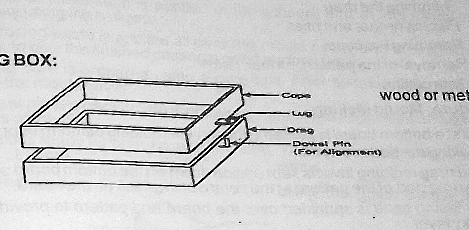
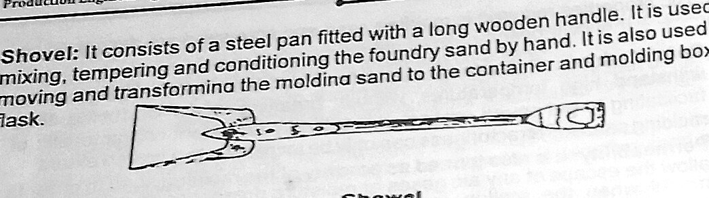
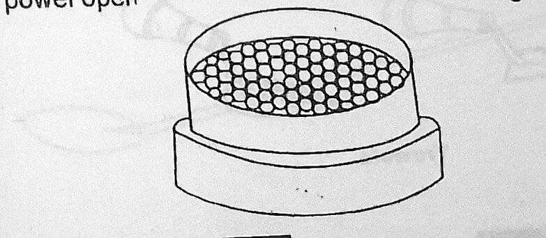
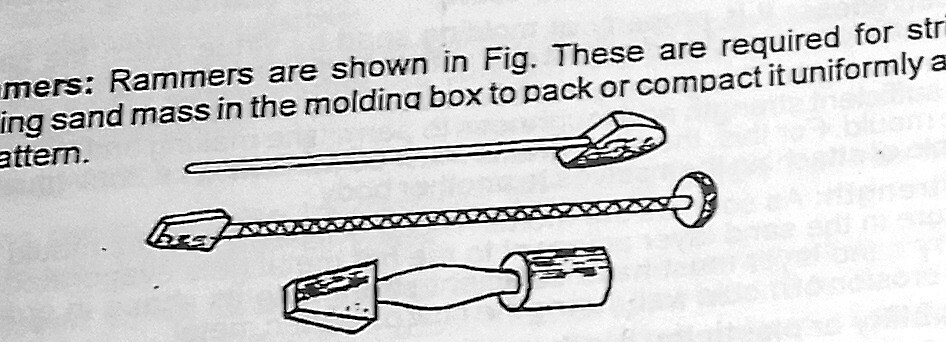
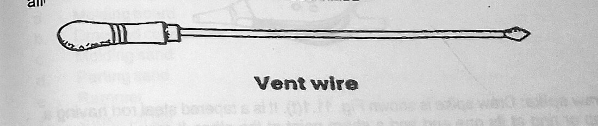
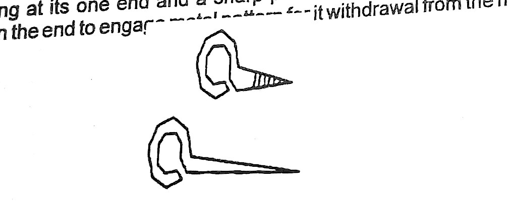
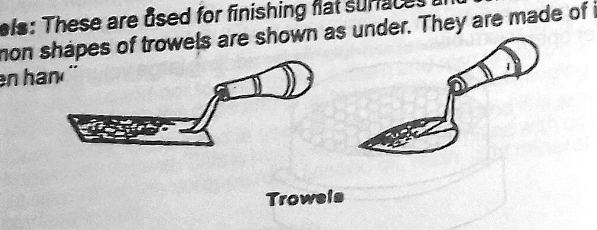
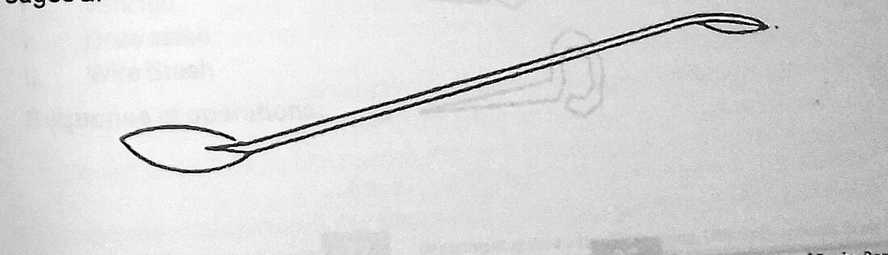
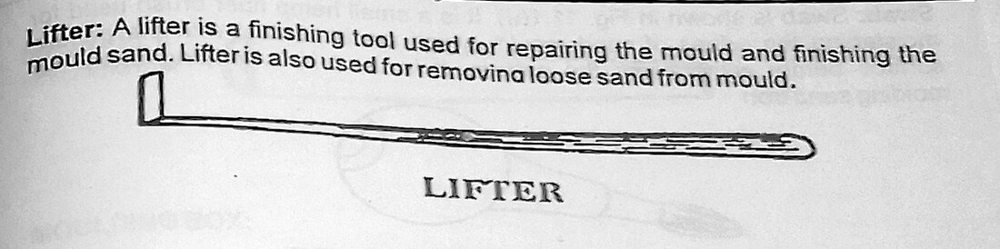
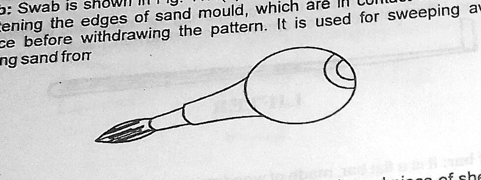
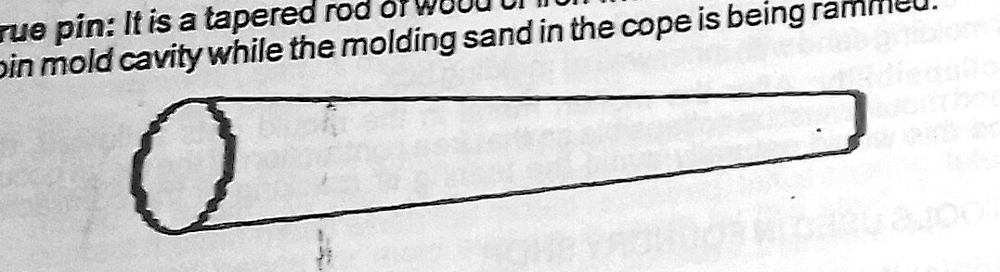
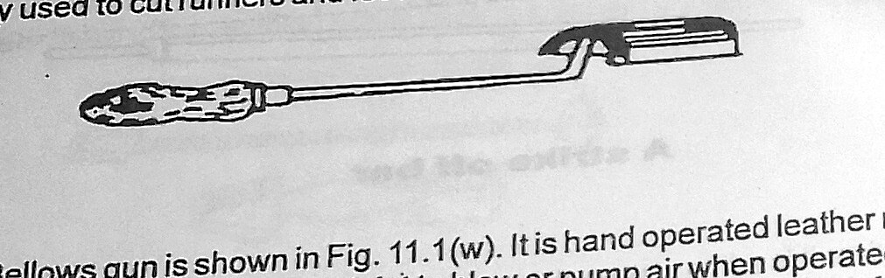
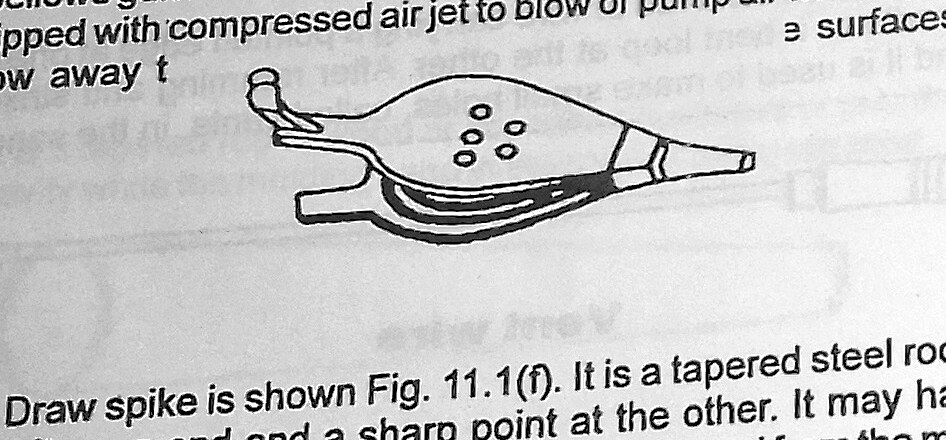
4.5 The mould and the gating system
A completed two-box mould consists of far more than the cavity. The elements are:
- Mould cavity — the void left by the withdrawn pattern, which the metal fills.
- Pouring basin (cup) — a funnel-shaped depression at the top of the sprue. Its purpose is to hold a reservoir of metal so that the sprue runs full from the start, and to allow the pourer to maintain a steady stream. Pouring directly into the sprue entrains air and draws slag into the mould.
- Sprue (downgate) — the vertical passage from the basin to the joint. It is deliberately made tapered, narrowing downward. The reason is that a falling stream of liquid accelerates and its cross-section naturally contracts; if the sprue is parallel the stream pulls away from the walls, air is entrained, and the metal arrives aerated and oxidised. A sprue tapered to match the natural contraction keeps it running full.
- Runner — the horizontal channel cut in the joint face, distributing metal from the base of the sprue towards the cavity.
- Ingate — the short passage where the runner enters the cavity, sized to control the rate of entry.
- Riser (feeder head) — a reservoir of metal connected to the cavity, positioned so that it solidifies last. As the casting solidifies it contracts — liquid metal shrinks on freezing by several per cent — and unless a supply of liquid is available to feed that contraction, a shrinkage cavity forms inside the casting. The riser supplies it. It also serves as a visual indication that the mould is full, and as a trap for the first, dirtiest metal.
- Vents — fine holes pricked with the vent wire from the top of the cope down to within a few millimetres of the cavity, allowing steam and air to escape.
- Core and core print — where an internal cavity is required, a separately made and baked sand core is supported in the mould by recesses (core prints) formed by extensions on the pattern.
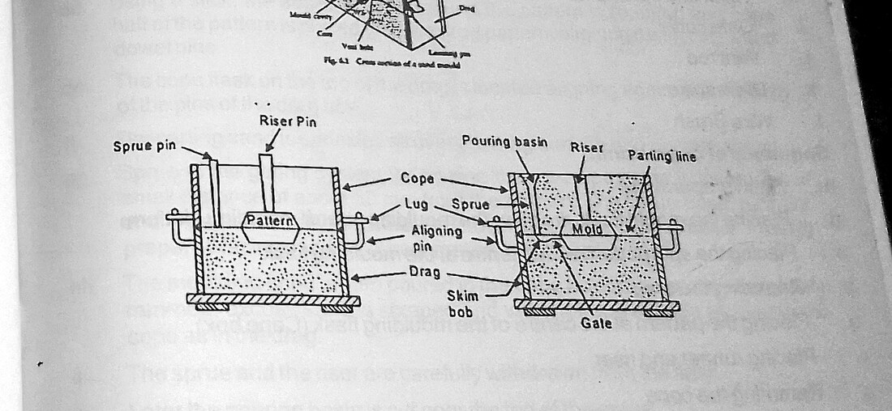
The sprue is positioned approximately 50 mm from the edge of the pattern. Too close and the falling stream erodes the cavity wall and washes sand into the casting; too far and the runner is unnecessarily long, so the metal loses temperature and may freeze before filling.
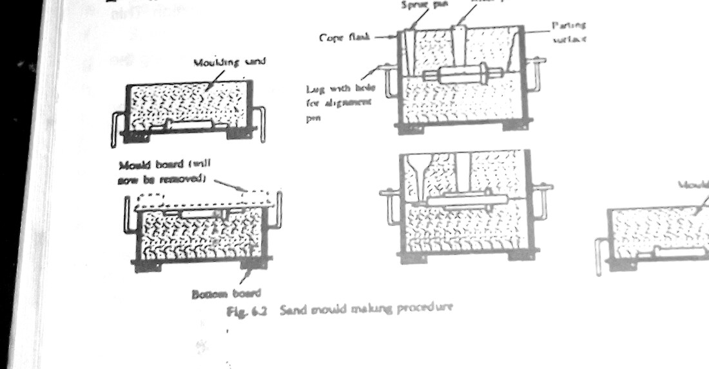
4.6 Solid versus split pattern moulding
The essential difference between the two exercises lies in where the parting plane falls and how the pattern is withdrawn.
With a solid pattern, the whole pattern is placed on the moulding board with its largest flat face downward, and is rammed up in the drag. When the drag is turned over, that flat face lies exactly in the joint plane, and the entire pattern projects into what will become the cope. The cope is then rammed over it, lifted off, and the pattern is drawn upward out of the drag in one piece. The requirement is absolute: no part of the pattern may be wider below the parting plane than at it, or the pattern will lock in the sand and cannot be withdrawn without destroying the mould.
With a split pattern, the component is one that cannot satisfy that requirement — typically something symmetrical about a central plane, such as a pulley, a valve body or a dumbbell shape, with material both above and below its widest section. The pattern is therefore made in two halves divided along the plane of greatest cross-section and located by dowel pins. The lower half, the one without the dowel pins protruding, is rammed in the drag; the mould is turned over, the upper half is located on the lower by the dowels, and the cope is rammed over it. Each half is then withdrawn in its own direction — the cope half upward out of the cope, the drag half upward out of the drag — and neither ever has to be pulled through an undercut. The parting plane of the mould is the parting plane of the pattern, and choosing that plane correctly is the whole design problem.
Place the parting plane at the section of greatest cross-sectional area, oriented so that nothing on either side of it grows wider as you move away from it. Additional considerations: keep as much of the casting as possible in the drag, because the drag is not disturbed after the pattern is drawn and the sand there is better supported; put machined surfaces and critical dimensions in the same box, so that any mismatch at the joint does not fall across them; and put the parting line where a small flash of metal at the joint will not matter or can easily be dressed off.
5 Table of Values
The tables below give the sand compositions, pattern allowances and mould dimensions specified in the manual and standard foundry practice. No measurements of a poured casting are reported, as pouring was carried out by the technologist as a demonstration.
| Sand | Silica / base sand | Clay binder | Moisture | Use |
|---|---|---|---|---|
| General moulding sand | 88 – 92 % | 6 – 12 % | 3 – 6 % | Overall composition of a prepared sand |
| Green sand | Balance | 18 – 30 % | 6 – 8 % | Used damp and unbaked; the sand used in this exercise |
| Loam sand | Balance | 30 – 50 % | ≈ 18 % | Very large hand-built or swept moulds |
| Dry sand | As green sand | As green sand | Baked out | Heavier castings requiring greater strength and accuracy |
| Parting sand | 100 % silica | Nil | Dry | Dusted on the joint face so cope and drag separate cleanly |
| Core sand | Silica | Oil binder | Baked | Cores; high strength, good collapsibility |
| Allowance | Typical magnitude | Reason |
|---|---|---|
| Shrinkage — cast iron | 10 mm/m (1.0 %) | Metal contracts from solidification temperature to room temperature |
| Shrinkage — brass, aluminium | 13 mm/m (1.3 %) | |
| Shrinkage — steel | 21 mm/m (2.1 %) | |
| Machining allowance | 2 – 6 mm per surface | Metal to be removed by subsequent machining |
| Draft (taper) | 1° – 3° | Allows the pattern to be drawn without tearing the vertical faces |
| Distortion (camber) | As required by shape | Pre-bend to counter known warping of long or U-shaped castings |
| Shake (rapping) | Small, negative | Rapping to loosen the pattern enlarges the cavity slightly |
| Quantity | Value | Note |
|---|---|---|
| Facing sand thickness over the pattern | 30 – 50 mm | Riddled directly onto the pattern; gives the cast surface its finish |
| Vent wire diameter | 1 – 2 mm | Vents taken to within 5–10 mm of the cavity, not into it |
| Sprue position from pattern edge | ≈ 50 mm | Close enough to avoid heat loss, far enough to avoid washing the cavity wall |
| Sprue form | Tapered, narrowing downward | Keeps the falling stream running full and prevents air entrainment |
| Draft on vertical pattern faces | 1° – 3° | In the direction of withdrawal |
| Volume shrinkage on solidification | Several per cent | Fed by the riser, which must freeze last |
6 Procedure
A. Preparing the sand
- The sand heap was turned over with the shovel and water was added sparingly and mixed in until the sand reached the correct temper. This was judged by the standard squeeze test: a handful squeezed in the fist should hold the impression of the fingers cleanly and, when broken across, should break sharply into two pieces without crumbling and without leaving the hand damp.
- Facing sand was riddled through the hand riddle to remove lumps, nails and foreign matter, and set aside separately from the backing sand.
B. EPX 1 — Mould from a solid pattern
- The solid pattern was cleaned and inspected, and was placed on the moulding board with its largest flat surface downward, so that this surface would become the parting plane.
- The drag was placed over it upside down, that is with its pins downward, and parting powder was dusted lightly over the pattern and board.
- Facing sand was riddled over the pattern to a depth of 30 to 50 mm, covering it completely, and was pressed gently around the pattern by hand so that it took up the detail.
- Backing sand was shovelled in and rammed in layers of about 50 to 75 mm. The peen end of the rammer was used around the pattern and in the corners, and the flat butt end for the general area. Each layer was rammed uniformly before the next was added; the sand was not rammed hard against the pattern itself.
- The box was filled slightly proud and the surplus sand was removed with the strike-off bar drawn across the top edges of the box, leaving the sand exactly level.
- Vent holes were pricked through the drag with the vent wire, and the bottom board was placed on top.
- The drag was rolled over through 180° together with both boards, and the moulding board (now uppermost) was removed, exposing the flat parting face with the pattern flush in it.
- The joint surface was smoothed with the trowel and dusted with parting sand, care being taken to keep parting sand off the pattern itself.
- The cope was located on the drag by its pins and lugs. The sprue pin was stood upright approximately 50 mm from the edge of the pattern and the riser pin was positioned over or beside the heaviest section of the pattern.
- Facing sand was riddled in and the cope was filled and rammed in layers exactly as for the drag, and struck off level.
- The sprue and riser pins were withdrawn with a gentle twisting motion, and a funnel-shaped pouring basin was cut at the top of the sprue with the trowel.
- The cope was vented thoroughly with the vent wire, the holes being taken down to within about 5 to 10 mm of the pattern but not into it.
- The cope was carefully lifted straight off, without rocking, and set aside on its edge on a level surface.
- The sand around the pattern was moistened with the swab, to strengthen the edges of the cavity against crumbling as the pattern came out.
- The draw spike was screwed into the pattern and the pattern was rapped lightly in two directions with the mallet against the spike to loosen it. It was then drawn vertically upward, steadily and without tilting.
- The runner and ingate were cut in the drag joint face with the gate cutter, connecting the base of the sprue to the cavity, and the entry was rounded so that metal would not be thrown against a sharp corner.
- Any damage to the cavity was repaired with the trowel, slick and lifter, and all loose sand was blown out of the cavity and the runner with the bellows.
- The cope was replaced on the drag, located by the pins, and the mould was weighted or clamped to resist the buoyancy of the metal. The mould was then ready for pouring.
C. EPX 2 — Mould from a split pattern
- The two halves of the split pattern were separated at the dowels and inspected. The half without protruding dowel pins — the drag half — was identified.
- The drag half was placed on the moulding board with its flat, dowel-hole face downward, and the drag box was placed over it.
- The drag was faced, filled, rammed in layers, struck off and vented exactly as in EPX 1, and was then rolled over 180° and the moulding board removed.
- The joint face was smoothed with the trowel, and the cope half of the pattern was located onto the drag half by pressing its dowel pins into the corresponding holes, so that the two halves registered exactly.
- Parting sand was dusted over the joint face, avoiding the pattern.
- The cope box was located on the drag, and the sprue and riser pins were positioned as before, the sprue about 50 mm from the pattern edge.
- The cope was faced, filled, rammed, struck off, the pins withdrawn, the pouring basin cut and the cope vented, as in EPX 1.
- The cope was lifted straight off. The cope half of the pattern remained in the cope, held in the sand it had been rammed into.
- Each half was then drawn separately: the cope half was swabbed, rapped and drawn upward out of the inverted cope, and the drag half was swabbed, rapped and drawn upward out of the drag. Neither half had to pass through an undercut at any stage.
- The runner and ingate were cut in the joint face, the two cavity halves were checked for alignment and any mismatch at the joint was dressed with the slick.
- Both halves were blown clean with the bellows, the cope was replaced on its pins, and the mould was clamped ready for pouring.
D. Pouring (demonstration)
- The metal was melted in the crucible furnace, the slag was skimmed from the surface, and the crucible was lifted with tongs into the pouring shank.
- The mould was poured in a single steady stream into the pouring basin, keeping the basin full throughout so that the sprue never ran partly empty, and continuing until metal appeared and stood in the riser.
- The casting was allowed to solidify and cool completely before knock-out, after which the runner, ingate and riser were removed and the casting was fettled.
7 Precautions
- Full protective clothing was worn in the pouring area: leather apron, leather gauntlets, spats and safety boots, with trousers worn over the boots so that any splash of metal would run off rather than into them, and a face shield in addition to safety glasses.
- No synthetic clothing was worn. Synthetic fibres melt and adhere to the skin, which makes a minor burn a serious one.
- The sand was tempered to the correct moisture content and no more. Excess moisture in a mould flashes to a very large volume of steam when the metal enters, and can blow metal back out of the mould.
- The mould was rammed uniformly — hard enough to hold its shape, not so hard as to destroy permeability — and was thoroughly vented with the vent wire before the cope was lifted.
- The moulds were completely dry of free water and no damp tool or wet material was allowed near the pouring area. Any moisture trapped beneath molten metal turns instantly to steam and causes an explosion.
- The pouring area was kept clear of unnecessary personnel, and everyone present was in protective clothing. There was a clear, unobstructed escape route from the pouring position.
- The floor of the pouring area was kept dry and free of scrap and obstructions.
- The crucible and tongs were preheated and inspected for cracks before use, and the tongs were checked to grip the crucible securely before it was lifted.
- Slag was skimmed and disposed of into a dry sand bed, never into water.
- Metal was poured in a steady, continuous stream with the basin kept full; the pour was not interrupted and restarted.
- The mould was clamped or weighted before pouring, to prevent the buoyancy of the liquid metal lifting the cope and running metal out at the joint.
- Nobody looked directly down into the mould or the riser while pouring, and nobody stood in line with the sprue.
- Castings were left to cool fully and were handled only with tongs. A casting that has lost its red colour is still far above the temperature that burns.
- Hands were kept clear of the strike-off bar's path, and rammers and spikes were carried and set down carefully.
- Fine sand dust was not raised unnecessarily; silica dust is a long-term respiratory hazard, and the shop was kept damp-swept rather than dry-brushed.
- The pattern was handled with care, drawn vertically and never levered out, and was cleaned and returned to the pattern store at the end of the session.
8 Discussion
Both moulds were completed. The solid-pattern mould came out clean at the second attempt and the split-pattern mould at the third, and the failures in between account for most of what was learned.
The first solid-pattern mould failed at the draw. A corner of the cavity collapsed as the pattern came out and dropped sand into the mould. Two things had gone wrong. The sand around the pattern had not been swabbed, so the edges of the cavity had no additional cohesion to resist the drag of the pattern as it lifted; and the pattern was rapped too vigorously in one direction only, which enlarged the cavity on that side and then let the pattern tilt as it was lifted. The corrected technique — swab first, rap lightly in two directions at right angles, then lift vertically with no tilt at all — worked first time. It is a good illustration of how many of the moulder's habits are about the drawing operation rather than the ramming: the mould can be perfect and still be destroyed in the two seconds it takes to remove the pattern.
The second failure was about ramming, and it exposed the central conflict of the whole section. Our instinct on the first mould was to ram hard, on the reasonable assumption that a stronger mould is a better mould. In fact hard ramming closes the pores between the sand grains, and a mould with no permeability cannot vent the steam generated at the mould face when metal enters. On the demonstration pour, one of the harder-rammed moulds produced a casting with blowholes on the cope surface. The moulder's rule we were given — ram in layers, firm but not hard, peen the corners and butt the bulk, and vent thoroughly afterwards — is not a set of arbitrary conventions but a practical method of getting strength and permeability simultaneously, which no single ramming pressure can do.
The split pattern presented a different problem entirely: alignment. On our first attempt the two halves of the cavity were offset at the joint by a couple of millimetres, which on a casting shows as a step all the way round the parting line. The cause was that the cope half of the pattern had not been seated fully down on its dowels before the cope was rammed, so it sat slightly proud and slightly skewed. Once the dowels were pressed fully home and checked by eye along the joint before ramming, the two halves registered correctly. This made concrete why the match plate pattern exists: mounting both halves permanently on a single plate removes the possibility of this error entirely, at the cost of more expensive tooling, which is exactly the trade that justifies it for production quantities and not for one-offs.
The logic of the parting plane became clear when we tried to imagine moulding the split pattern's shape as a solid one. Because it was widest at the middle and narrowed both above and below, no single withdrawal direction existed — whichever way you pulled, part of the pattern was trapped. Splitting it at the widest section gives two halves, each of which narrows monotonically away from the joint, and each of which therefore draws freely in its own direction. Stated that way, the rule is almost obvious, but the general skill it points to — looking at a component and immediately seeing where it must part and whether it can be moulded at all — is one that clearly takes practice.
The gating system was the part we would previously have dismissed as plumbing. The tapered sprue is the clearest example of why it is not. A parallel sprue seems the natural thing to make, but a falling stream of liquid accelerates and its cross-section contracts; in a parallel passage the stream separates from the walls, air is drawn in and mixed into the metal, and the casting arrives full of oxide and gas. Tapering the sprue so that it narrows at the same rate the stream does keeps it running full. The riser is a similarly counter-intuitive item: it is metal deliberately poured to be thrown away, and its entire function is to still be liquid when the casting has frozen, so that it can feed the solidification shrinkage. That immediately explains why a riser is placed on the heaviest section — the section that freezes last — and why it must be generously sized rather than economically small.
Finally, the safety dimension of this section is unlike any other in the laboratory. In the other shops a lapse costs a workpiece or, at worst, a cut. Here the hazard is several kilogrammes of liquid metal at well over 1000 °C, and the single most dangerous substance in the vicinity is water. That an insignificant amount of trapped moisture can expand violently enough to throw molten metal out of a mould is the reason for the rules on tempering, on dry tools, on a dry floor, and on never skimming slag into water. It also explains the clothing rules — trousers over boots, no synthetics, a clear escape route — which look excessive until you understand what they are designed for.
9 Conclusion
The objectives of the practical were met. The materials of the foundry shop were identified, moulding sand being established as an engineered aggregate of 88–92 per cent silica, 6–12 per cent clay binder and 3–6 per cent moisture, with green sand containing 18–30 per cent clay and 6–8 per cent water. The six required properties — refractoriness, permeability, cohesiveness, adhesiveness, collapsibility and flowability — were established, and the conflict between green strength and permeability was identified as the governing compromise of the process.
The hand tools of the moulding shop were identified and used, and the types of pattern and the five pattern allowances — shrinkage, machining, draft, distortion and shake — were established together with the reason for each.
A complete green sand mould was prepared from a solid pattern, with the pattern rammed in the drag on its flat face, the mould rolled over, the cope rammed with sprue and riser pins in place, the pattern swabbed, rapped and drawn, and the runner and ingate cut. A second mould was prepared from a split pattern, the two halves being located by dowels at the plane of greatest cross-section and each half withdrawn separately in its own direction. Both moulds were faced with 30–50 mm of riddled facing sand, vented with 1–2 mm vent wire, and gated with a tapered sprue positioned approximately 50 mm from the pattern edge.
It is concluded that the quality of a sand casting is determined almost entirely before any metal is melted. The ramming must be firm but not hard, and must be followed by thorough venting, or gas cannot escape and the casting is blown; the pattern must be swabbed, rapped in two directions and drawn vertically, or the cavity is damaged at the last moment; the parting plane must lie at the section of greatest cross-section, or the pattern cannot be withdrawn at all; and the sprue must be tapered and the riser placed on the heaviest section, or the metal arrives aerated and the casting solidifies with an internal shrinkage cavity.
Questions asked in the material
1. Show a working drawing of the mould produced.
The drawings were produced in the drawing book. For each mould they comprise a plan of the joint face, showing the outline of the cavity, the position of the sprue approximately 50 mm from the pattern edge, the runner and the ingate; and a vertical section through the assembled mould showing, from top to bottom, the pouring basin, the tapered sprue narrowing downward, the cope with its vent holes taken to within 5–10 mm of the cavity, the parting line, the cavity itself, the riser standing over the heaviest section, and the drag. The split-pattern drawing additionally shows the pattern halves and their dowel pins, with the parting plane of the pattern coinciding with the parting plane of the mould at the section of greatest cross-sectional area.
2. Using good sketches and short notes, state the operational steps.
- Temper the sand. Add water sparingly and mix; test by the squeeze test — holds the finger impression, breaks cleanly, leaves the hand dry.
- Ram the drag. Pattern flat face down on the moulding board, drag inverted over it, dust parting powder, riddle 30–50 mm of facing sand, fill and ram in 50–75 mm layers with the peen at the corners and the butt over the bulk, strike off level, vent.
- Roll over. Board on top, invert 180°, remove the moulding board, smooth the joint face, dust with parting sand.
- Ram the cope. (Split pattern: first locate the cope half on its dowels.) Set the cope on the pins, stand the sprue pin 50 mm from the pattern and the riser pin over the heaviest section, riddle facing sand, fill and ram in layers, strike off.
- Finish the cope. Withdraw the sprue and riser pins with a twist, cut the pouring basin, vent thoroughly.
- Lift the cope straight up without rocking; stand it on edge.
- Draw the pattern. Swab around it, screw in the draw spike, rap lightly in two directions, lift vertically. On a split pattern draw each half separately from its own box.
- Gate. Cut the runner and ingate in the joint face with the gate cutter and round the entry.
- Repair and clean. Trowel, slick and lifter for damage; bellows to blow out all loose sand.
- Close. Replace the cope on its pins; clamp or weight the mould against the buoyancy of the metal.
- Pour. Skim the slag, pour in one steady stream keeping the basin full until metal stands in the riser; cool fully before knock-out.
3. State the uses of each tool used during the exercise.
| Tool | Use in this exercise |
|---|---|
| Moulding box (cope and drag) | Contains and supports the sand in two separable halves located by pins and lugs. |
| Moulding board / turnover board | Flat base for ramming the drag and for rolling the mould over. |
| Shovel | Turning and tempering the sand heap and filling the boxes. |
| Hand riddle | Sieving facing sand over the pattern, removing lumps and foreign matter. |
| Peen rammer | Packing sand into corners and around the pattern where the butt cannot reach. |
| Butt rammer | Ramming the bulk of each layer uniformly. |
| Strike-off bar | Removing surplus sand level with the top edges of the box. |
| Vent wire | Pricking 1–2 mm gas escape passages through the cope to within 5–10 mm of the cavity. |
| Swab | Moistening the sand around the pattern so the cavity edges resist the drag of withdrawal. |
| Draw spike and mallet | Rapping the pattern to loosen it and drawing it vertically out of the sand. |
| Trowels | Smoothing the joint face and repairing damage to the mould. |
| Slick | Finishing small cavities, fillets and corners the trowel cannot reach. |
| Lifter | Removing loose sand from deep, narrow pockets of the mould. |
| Sprue and riser pins | Forming the vertical pouring and feeding passages through the cope. |
| Gate cutter | Cutting the runner and ingate channels in the joint face. |
| Bellows | Blowing loose sand out of the finished cavity without touching and damaging it. |
| Crucible, tongs, furnace | Melting, carrying and pouring the metal. |
4. List out the new things you have learnt.
Answered under What I learned.
5. State the safety precautions you observed.
Listed in full under Precautions. The precautions specific to the foundry are: full leather protection with trousers worn outside the boots and no synthetic clothing; moulds and tools completely free of free water, since trapped moisture under molten metal explodes; a dry, clear floor and an unobstructed escape route from the pouring position; moulds clamped or weighted against the buoyancy of the metal; slag skimmed into dry sand and never into water; nobody looking down into the sprue or riser during pouring; castings handled only with tongs long after they have lost their red colour; and dust kept down, because silica dust is a long-term respiratory hazard.
Special questions
S1. Why is a split pattern used at all, given that a solid pattern is cheaper to make?
Because a solid pattern can only be used for a shape that can be withdrawn from the sand in a single direction. The requirement is that no part of the pattern is wider below the parting plane than it is at the plane itself; if anything is, the pattern locks in the sand and the mould is destroyed on withdrawal. Many components — a pulley, a valve body, a spherical or barrel-shaped part — are widest at a central section and taper away both above and below it, so no single withdrawal direction exists. Splitting the pattern at the plane of greatest cross-section produces two halves, each of which narrows monotonically away from the joint and each of which can therefore be drawn freely in its own direction, the cope half upward out of the cope and the drag half upward out of the drag. The extra cost of the two-piece pattern with its dowels buys the ability to mould a shape that could not otherwise be moulded at all.
S2. Why must the sprue be tapered, and what happens if it is parallel?
A stream of liquid falling under gravity accelerates, and by continuity its cross-sectional area must contract as its velocity rises: A1v1 = A2v2, with v2 = √(v1² + 2gh). In a parallel-sided sprue, the passage is therefore larger than the stream over most of its length; the metal pulls away from the walls, a low-pressure region forms, and air is drawn in and entrained. The metal reaching the cavity is aerated and oxidised, which gives porosity and dross inclusions in the casting, and the loose stream also tends to erode the sand.
Tapering the sprue so that it narrows downward at the same rate as the natural contraction of the stream keeps it running full over its whole length, so no air can be entrained and the flow is smooth. The same reasoning is why the pouring basin must be kept full throughout the pour: the instant the basin empties, air goes down the sprue with the metal.
S3. What is the purpose of a riser, and where should it be placed?
A riser is a reservoir of molten metal connected to the casting, and its purpose is to feed solidification shrinkage. Metal occupies a smaller volume as a solid than as a liquid — by several per cent for most casting alloys — so as the casting freezes, its volume falls. If no further liquid is available, that missing volume appears as a shrinkage cavity somewhere inside the casting, invariably in the last region to freeze, which is the thickest and most structurally important section.
The riser supplies liquid metal to fill that contraction as it occurs, so the cavity forms in the riser instead of in the casting, and the riser is then cut off and returned to the melt. For it to work, the riser must solidify after the casting does, which is why it is placed on or beside the heaviest section — the section that freezes last — and why it must be large enough, and compact enough in shape, to retain its heat longer than the casting. This is the principle of directional solidification: the mould is designed so that freezing begins at the extremities and progresses steadily towards the riser, which freezes last of all. A riser placed on a thin section is useless, because the thin section freezes first and cuts off the feeding path.
Secondarily, the riser traps the first and dirtiest metal, allows slag and dross to float clear of the casting, and provides a visible indication that the mould is full.
S4. List the common sand casting defects, their causes and their remedies.
| Defect | Appearance | Cause | Remedy |
|---|---|---|---|
| Blowhole / gas porosity | Smooth round cavities under or on the cope surface | Excess moisture, over-ramming, inadequate venting | Correct the temper, ram uniformly and not hard, vent thoroughly |
| Shrinkage cavity | Rough, irregular internal void at the thickest section | Inadequate or badly placed riser; no directional solidification | Riser on the heaviest section, adequately sized; use chills on thick areas |
| Sand wash / erosion | Rough excess metal and embedded sand | Metal stream eroding the mould; sprue too close to the pattern; low green strength | Move the sprue back to about 50 mm; round the ingate; improve bonding |
| Drop / inclusion | Lump of sand in the casting, void in the cope surface | Sand falling from the cope; weak or damaged mould | Ram adequately, handle the cope carefully, repair damage, blow out loose sand |
| Misrun | Casting incomplete, edges rounded | Metal too cold, section too thin, gating too restrictive | Raise pouring temperature, enlarge the gates, redesign the section |
| Cold shut | Seam where two streams met without fusing | Two flow fronts meeting after losing heat | Raise the pouring temperature and pour faster; revise gate positions |
| Hot tear | Irregular crack, often at a sharp internal corner | Contraction restrained by unyielding sand or a sharp corner | Improve collapsibility; add fillet radii at corners |
| Fin / flash | Thin sheet of metal along the parting line | Cope and drag not properly closed or clamped; mould lifted by the metal | Clamp or weight the mould; check the box pins for wear |
| Shift / mismatch | Step in the casting at the parting line | Misalignment of cope and drag, or of split pattern halves | Seat the dowels fully; use a match plate; check worn box pins |
| Metal penetration / burn-on | Rough, sand-fused surface | Sand too coarse or insufficiently refractory; soft ramming | Finer facing sand; adequate ramming; mould coating |
S5. Why is a pattern not the same size as the finished casting?
Five allowances are applied, four positive and one negative. Shrinkage: the metal contracts as it cools from solidification temperature to ambient, so the pattern is made oversize by about 10 mm/m for cast iron, 13 mm/m for brass and aluminium, and 21 mm/m for steel — the patternmaker uses a contraction rule whose divisions are correspondingly enlarged, so the allowance is applied automatically. Machining allowance: 2 to 6 mm of extra metal is left on any surface that will be machined. Draft: all vertical faces are tapered by 1 to 3° in the direction of withdrawal, so the pattern releases from the sand instead of dragging along the full height of every face. Distortion allowance: long, thin or U-shaped castings warp predictably as they cool, and the pattern is pre-bent in the opposite direction so that the casting distorts into the correct shape. Shake allowance: this one is negative — rapping the pattern to loosen it slightly enlarges the cavity, so on precision work the pattern is made marginally undersize to compensate.
What I learned
- That moulding sand is a designed material with a specification, not just sand, and that the clay does nothing at all without the right amount of water in it.
- The squeeze test for temper — holds the finger marks, breaks cleanly, leaves the hand dry — which turns a chemical specification into something you can check in two seconds at the heap.
- That green strength and permeability pull against each other, and that ramming in uniform layers plus thorough venting is the method of getting both rather than trading one for the other.
- That over-ramming is a real and common fault, and that the blowholes it causes appear on the cope surface of the casting, where the gas collects.
- That drawing the pattern is the most delicate moment in the whole process: swab first, rap lightly in two directions, and lift dead vertically.
- Why a parting plane goes at the section of greatest cross-sectional area, and how to look at a component and see immediately whether it can be moulded from a solid pattern.
- That a split pattern's dowels must be pressed fully home before ramming, and that the match plate pattern exists precisely to eliminate the mismatch error this prevents.
- The five pattern allowances, and that shake is a negative one — which surprised the whole group.
- That the sprue is tapered because a falling stream contracts, and that a parallel sprue entrains air and delivers oxidised metal.
- That a riser is metal deliberately poured to be thrown away, that its job is to still be liquid when the casting has frozen, and that this is why it goes on the heaviest section.
- The idea of directional solidification — designing the mould so that freezing sweeps from the extremities towards the riser.
- That casting defects are diagnostic: each one points to a specific cause in the moulding or pouring, so a defective casting is information rather than just scrap.
- That in a foundry the most dangerous substance present is water, and that this single fact explains the rules on tempering, dry tools, dry floors and slag disposal.
- Why trousers go outside the boots, and that the foundry clothing rules are all designed around the behaviour of a splash of liquid metal.